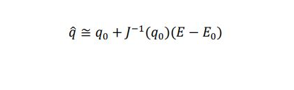
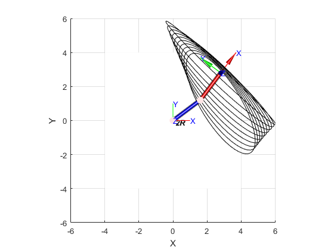

Contents
Anexo
PUNTO 1
PUNTO 2
PUNTO 3
PUNTO 4
m1=imread('jacobiano.jpg');
figure (1)
imshow(m1);

PUNTO 5
clear all
clc
syms q1 q2 q3 L1 L2
clear all;
clc;
syms q1 q2 q3 L1 L2 real
L(1) = Link('revolute' ,'alpha',0, 'a',0, 'd',0 ,'offset',0, 'modified');
L(2) = Link('revolute' ,'alpha',0, 'a',L1, 'd',0 ,'offset',0, 'modified');
RR = SerialLink(L,'name','2R')
RR.tool=transl(L2,0,0);
A01 = simplify(L(1).A(q1));
A12 = simplify(L(2).A(q2));
A23 = (transl(L2,0,0));
A03 = simplify(A01*A12*A23);
z01 = A01(1:3,3);
A02 = simplify(A01*A12);
z02 = A02(1:3,3);
A03 = simplify(A02*A23);
z03 = A03(1:3,3);
p23 = A03(1:3,4) - A02(1:3,4);
p13 = A03(1:3,4) - A01(1:3,4);
J1 =simplify([(skew(z01) * p13); z01]);
J2 =simplify([(skew(z02) * p23); z02]);
disp('Jacobiano Geometrico o Convencional')
Jgeo = simplify([J1, J2])
disp('Jacobiano geometrico por propagacion de velocidades')
T01=A01;
T12=A12;
T23=A23;
T03=A03;
syms q1p q2p real
v00 = [0 0 0]';
w00 = [0 0 0]';
w11 = T01(1:3,1:3)'*w00+q1p*T01(1:3,3);
v11 = T01(1:3,1:3)'*(v00 + simplify(cross(w00,T01(1:3,4))));
w22 = T12(1:3,1:3)'*w11+q2p*T12(1:3,3);
v22 = simplify(T12(1:3,1:3)'*(v11 + simplify(cross(w11,T12(1:3,4)))));
w33 = T23(1:3,1:3)'*w22+0*T23(1:3,3);
v33 = simplify(T23(1:3,1:3)'*(v22 + cross(w22,T23(1:3,4))));
v03 = simplify(T03(1:3,1:3)*v33)
w03 = w33
J1g= [v03;w03];
J1g=subs(J1g,q1p,1);
J1g=subs(J1g,q2p,0);
J2g= [v03;w03]
J2g=subs(J2g,q1p,0);
J2g=subs(J2g,q2p,1);
disp('Jacobiano Analitico')
Jgeo2=simplify([J1g, J2g])
pos_x = T03(1,4);
pos_y = T03(2,4);
J11 = diff(pos_x,q1);
J12 = diff(pos_x,q2);
J21 = diff(pos_y,q1);
J22 = diff(pos_y,q2);
Jsym = [J11 J12 ;
J21 J22];
L1 = 2;
L2 = 2;
q1 = pi/12;
q2 = pi/6;
disp('Jacobiano Geometrico Evaluado')
Jgeo_eval = eval(Jgeo)
q1_punto = pi/4;
q2_punto = pi/2;
q_punto = [q1_punto; q2_punto];
disp('b. Vector de Velocidades')
VW = Jgeo_eval*q_punto
RR =
2R (2 axis, RR, modDH, fastRNE)
+---+-----------+-----------+-----------+-----------+-----------+
| j | theta | d | a | alpha | offset |
+---+-----------+-----------+-----------+-----------+-----------+
| 1| q1| 0| 0| 0| 0|
| 2| q2| 0| L1| 0| 0|
+---+-----------+-----------+-----------+-----------+-----------+
grav = 0 base = 1 0 0 0 tool = 1 0 0 0
0 0 1 0 0 0 1 0 0
9.81 0 0 1 0 0 0 1 0
0 0 0 1 0 0 0 1
Jacobiano Geometrico o Convencional
Jgeo =
[ - L2*sin(q1 + q2) - L1*sin(q1), -L2*sin(q1 + q2)]
[ L2*cos(q1 + q2) + L1*cos(q1), L2*cos(q1 + q2)]
[ 0, 0]
[ 0, 0]
[ 0, 0]
[ 1, 1]
Jacobiano geometrico por propagacion de velocidades
v03 =
- L1*q1p*sin(q1) - L2*q1p*sin(q1 + q2) - L2*q2p*sin(q1 + q2)
L2*q1p*cos(q1 + q2) + L2*q2p*cos(q1 + q2) + L1*q1p*cos(q1)
0
w03 =
0
0
q1p + q2p
J2g =
- L1*q1p*sin(q1) - L2*q1p*sin(q1 + q2) - L2*q2p*sin(q1 + q2)
L2*q1p*cos(q1 + q2) + L2*q2p*cos(q1 + q2) + L1*q1p*cos(q1)
0
0
0
q1p + q2p
Jacobiano Analitico
Jgeo2 =
[ - L2*sin(q1 + q2) - L1*sin(q1), -L2*sin(q1 + q2)]
[ L2*cos(q1 + q2) + L1*cos(q1), L2*cos(q1 + q2)]
[ 0, 0]
[ 0, 0]
[ 0, 0]
[ 1, 1]
Jacobiano Geometrico Evaluado
Jgeo_eval =
-1.9319 -1.4142
3.3461 1.4142
0 0
0 0
0 0
1.0000 1.0000
b. Vector de Velocidades
VW =
-3.7387
4.8494
0
0
0
2.3562
L1 = 2;
L2 = 2;
l=L1;
L(1) = Link('revolute' ,'alpha',0, 'a',0, 'd',0 ,'offset',0, 'modified');
L(2) = Link('revolute' ,'alpha',0, 'a',L1, 'd',0 ,'offset',0, 'modified');
dosr = SerialLink(L,'name','2R')
dosr.tool=transl(L2,0,0);
vector=[2.8*ones(1,10);linspace(1,2.8,10)];
q_elip = ones(2,10);
for i=1:length(vector)
x = vector(1,i);
y = vector(2,i);
D = (x^2 + y^2 - l^2 -l^2)/(2 *l* l);
if abs(D)>1
disp('D>1');
Q1=NaN;
Q2=NaN;
else
q2_1=atan2(sqrt(1-D^2),D);
q2_2=atan2(-sqrt(1-D^2),D);
q1_1 = atan2(y,x) - atan2(l * sin(q2_1),l + l * cos(q2_1));
q1_2 = atan2(y,x) - atan2(l * sin(q2_2),l + l * cos(q2_2));
Q1=[q1_1,q2_1];
Q2=[q1_2,q2_2];
q_elip(1,i)=q1_1;
q_elip(2,i)=q2_1;
end
end
figure
grid on
hold on
trplot(eye(4),'rgb')
axis([-6 6 -6 6])
for i=1:length(vector)
j=dosr.jacob0(q_elip(:,i));
j=[j(1,:);j(2,:)];
c=dosr.fkine(q_elip(:,i));
dosr.plot(q_elip(:,i)')
plot_ellipse(j*j',c(1:2,4))
pause(1)
end
dosr =
2R (2 axis, RR, modDH, fastRNE)
+---+-----------+-----------+-----------+-----------+-----------+
| j | theta | d | a | alpha | offset |
+---+-----------+-----------+-----------+-----------+-----------+
| 1| q1| 0| 0| 0| 0|
| 2| q2| 0| 2| 0| 0|
+---+-----------+-----------+-----------+-----------+-----------+
grav = 0 base = 1 0 0 0 tool = 1 0 0 0
0 0 1 0 0 0 1 0 0
9.81 0 0 1 0 0 0 1 0
0 0 0 1 0 0 0 1

PUNTO 6
clear all
clc
warning('off','all')
syms q1 q2 q3 q4 l1 l2 l3 real
L(1) = Link('revolute','alpha',0,'a',0,'d',l1,'offset',0,'modified', 'sym');
L(2) = Link('revolute','alpha',-pi/2,'a',0,'d',0,'offset',0,'modified', 'sym');
L(3) = Link('revolute','alpha',0,'a',l2,'d',0,'offset',-pi/2,'modified', 'sym');
L(4) = Link('revolute','alpha',0,'a',l3,'d',0,'offset',0,'modified', 'sym');
tresR=SerialLink(L, 'name','tresR')
M0A1=L(1).A(q1);
M1A2=L(2).A(q2);
M2A3=L(3).A(q3);
M3A4=L(4).A(q4);
z01 = M0A1(1:3,3);
M0A2 = M0A1*M1A2;
z02 = M0A2(1:3,3);
M0A3=M0A2*M2A3;
z03=M0A3(1:3,3);
M0A4=M0A3*M3A4;
z04=M0A4(1:3,3);
p34 = M0A4(1:3,4) - M0A3(1:3,4);
p24 = M0A4(1:3,4) - M0A2(1:3,4);
p14 = M0A4(1:3,4) - M0A1(1:3,4);
p44 = M0A4(1:3,4) - M0A4(1:3,4);
J1 =simplify([(skew(z01) * p14); z01]);
J2 = simplify([(skew(z02) * p24); z02]);
J3 =simplify([(skew(z03) * p34); z03]);
J4 = simplify([(skew(z04) * p44); z04]);
j0n=simplify([J1,J2,J3,J4])
q1=pi/4;
q2=pi/4;
q3=pi/2;
q4=0;
l2=1;
l3=1;
l1=1;
j0n =eval(j0n)
l = [1 1 1];
q = [pi/4 pi/4 pi/2 0];
L(1) = Link('revolute','alpha',0,'a',0,'d',l(1),'offset',0,'modified');
L(2) = Link('revolute','alpha',pi/2,'a',0,'d',0,'offset',0,'modified');
L(3) = Link('revolute','alpha',0,'a',l(2),'d',0,'offset',0,'modified');
L(4) = Link('revolute','alpha',0,'a',l(3),'d',0,'offset',0,'modified');
tres=SerialLink(L, 'name','tresR');
l1 = l(1);
l2 = l(2);
l3 = l(3);
q1 = q(1);
q2 = q(2);
q3 = q(3);
q4 = q(4);
j0 = (tres.jacob0([q1 q2 q3 q4]))
tresR =
tresR (4 axis, RRRR, modDH, fastRNE)
+---+-----------+-----------+-----------+-----------+-----------+
| j | theta | d | a | alpha | offset |
+---+-----------+-----------+-----------+-----------+-----------+
| 1| q1| l1| 0| 0| 0|
| 2| q2| 0| 0| -pi/2| 0|
| 3| q3| 0| l2| 0| -pi/2|
| 4| q4| 0| l3| 0| 0|
+---+-----------+-----------+-----------+-----------+-----------+
grav = 0 base = 1 0 0 0 tool = 1 0 0 0
0 0 1 0 0 0 1 0 0
9.81 0 0 1 0 0 0 1 0
0 0 0 1 0 0 0 1
j0n =
[ -sin(q1)*(l3*sin(q2 + q3) + l2*cos(q2)), cos(q1)*(l3*cos(q2 + q3) - l2*sin(q2)), l3*cos(q2 + q3)*cos(q1), 0]
[ cos(q1)*(l3*sin(q2 + q3) + l2*cos(q2)), sin(q1)*(l3*cos(q2 + q3) - l2*sin(q2)), l3*cos(q2 + q3)*sin(q1), 0]
[ 0, - l3*sin(q2 + q3) - l2*cos(q2), -l3*sin(q2 + q3), 0]
[ 0, -sin(q1), -sin(q1), -sin(q1)]
[ 0, cos(q1), cos(q1), cos(q1)]
[ 1, 0, 0, 0]
j0n =
-1.0000 -1.0000 -0.5000 0
1.0000 -1.0000 -0.5000 0
0 -1.4142 -0.7071 0
0 -0.7071 -0.7071 -0.7071
0 0.7071 0.7071 0.7071
1.0000 0 0 0
j0 =
-0.0000 -1.0000 -0.5000 0
0.0000 -1.0000 -0.5000 0
-0.0000 0 -0.7071 0
0.0000 0.7071 0.7071 0.7071
0.0000 -0.7071 -0.7071 -0.7071
1.0000 0.0000 0.0000 0.0000
Punto 7
clear all
clc
syms q1 q2 q3 q4 q5 q1p q2p q3p q4p q5p l1 real
L(1) = Link('prismatic','alpha',0,'a',0,'theta',0,'offset',0,'qlim',[0 100],'modified');
L(2) = Link('prismatic','alpha',-pi/2,'a',0,'theta',-pi/2,'offset',0,'qlim',[0 100],'modified');
L(3) = Link('prismatic','alpha',-pi/2,'a',0,'theta',0,'offset',0,'qlim',[0 100],'modified');
L(4) = Link('revolute','alpha',-pi/2,'a',0,'d',0,'offset',0,'modified');
L(5) = Link('revolute','alpha',0,'a',l1,'d',0,'offset',0,'modified');
PPPR = SerialLink(L, 'name','PPPR');
T01 = simplify(L(1).A(q1));
T12 = simplify(L(2).A(q2));
T12(1,1) = 0;
T12(2,1) = 0;
T12(2,2) = 0;
T12(3,2) = 0;
T12(3,3) = 0;
T12(3,4) = 0;
T23 = simplify(L(3).A(q3));
T23(2,2) = 0;
T23(3,3) = 0;
T23(3,4) = 0;
T34 = simplify(L(4).A(q4));
T34(2,1) = 0;
T34(2,2) = 0;
T34(3,3) = 0;
T45 = simplify(L(5).A(q5));
T02 = simplify(T01*T12);
T03 = simplify(T01*T12*T23);
T04 = simplify(T01*T12*T23*T34);
T05 = simplify(T01*T12*T23*T34*T45);
x = T05(1,4);
y = T05(2,4);
z = T05(3,4);
phi = pi/2;
theta = pi/2;
psi = q4 + q5;
X = [x; y; z; phi; theta; psi];
J1 = [diff(x, q1) diff(y, q1) diff(z, q1) diff(phi, q1) diff(theta, q1) diff(psi,q1)]';
J2 = [diff(x, q2) diff(y, q2) diff(z, q2) diff(phi, q2) diff(theta, q2) diff(psi,q2)]';
J3 = [diff(x, q3) diff(y, q3) diff(z, q3) diff(phi, q3) diff(theta, q3) diff(psi,q3)]';
J4 = [diff(x, q4) diff(y, q4) diff(z, q4) diff(phi, q4) diff(theta, q4) diff(psi,q4)]';
J5 = [diff(x, q5) diff(y, q5) diff(z, q5) diff(phi, q5) diff(theta, q5) diff(psi,q5)]';
Janalitico = [J1 J2 J3 J4 J5]
z01 = T01(1:3,3);
z02 = T02(1:3,3);
z03 = T03(1:3,3);
z04 = T04(1:3,3);
z05 = T05(1:3,3);
p55 = T05(1:3,4) - T05(1:3,4);
p45 = T05(1:3,4) - T04(1:3,4);
p35 = T05(1:3,4) - T03(1:3,4);
p25 = T05(1:3,4) - T02(1:3,4);
p15 = T05(1:3,4) - T01(1:3,4);
J1 =simplify([z01 ;zeros(3,1)]);
J2 =simplify([z02 ;zeros(3,1)]);
J3 =simplify([z03 ;zeros(3,1)]);
J4 =simplify([(skew(z04) * p45); z04]);
J5 =simplify([(skew(z05) * p55); z05]);
Jgeo = simplify([J1, J2, J3, J4, J5])
l1 = 1
q = [1 1 1 pi/2 0];
L(1) = Link('prismatic','alpha',0,'a',0,'theta',0,'offset',0,'qlim',[0 100],'modified');
L(2) = Link('prismatic','alpha',-pi/2,'a',0,'theta',-pi/2,'offset',0,'qlim',[0 100],'modified');
L(3) = Link('prismatic','alpha',-pi/2,'a',0,'theta',0,'offset',0,'qlim',[0 100],'modified');
L(4) = Link('revolute','alpha',-pi/2,'a',0,'d',0,'offset',0,'modified');
L(5) = Link('revolute','alpha',0,'a',l1,'d',0,'offset',0,'modified');
P3R = SerialLink(L, 'name','3PR');
q1 = q(1);
q2 = q(2);
q3 = q(3);
q4 = q(4);
q5 = q(5);
Jgeo =eval(Jgeo)
j0 = (P3R.jacob0([q1 q2 q3 q4 q5]))
q_dot = [1.5 1.2 1.8 pi/4 0]';
X = Jgeo*q_dot
Janalitico =
[ 0, 0, 1, -l1*cos(q4), 0]
[ 0, 1, 0, 0, 0]
[ 1, 0, 0, -l1*sin(q4), 0]
[ 0, 0, 0, 0, 0]
[ 0, 0, 0, 0, 0]
[ 0, 0, 0, 1, 1]
Jgeo =
[ 0, 0, 1, -l1*cos(q4), 0]
[ 0, 1, 0, 0, 0]
[ 1, 0, 0, -l1*sin(q4), 0]
[ 0, 0, 0, 0, 0]
[ 0, 0, 0, -1, -1]
[ 0, 0, 0, 0, 0]
l1 =
1
Jgeo =
0 0 1.0000 -0.0000 0
0 1.0000 0 0 0
1.0000 0 0 -1.0000 0
0 0 0 0 0
0 0 0 -1.0000 -1.0000
0 0 0 0 0
j0 =
-0.0000 0 1.0000 -0.0000 0
0 1.0000 0.0000 0.0000 0
1.0000 0.0000 -0.0000 -1.0000 0
0 0 0 0.0000 0.0000
0 0 0 -1.0000 -1.0000
0 0 0 -0.0000 -0.0000
X =
1.8000
1.2000
0.7146
0
-0.7854
0